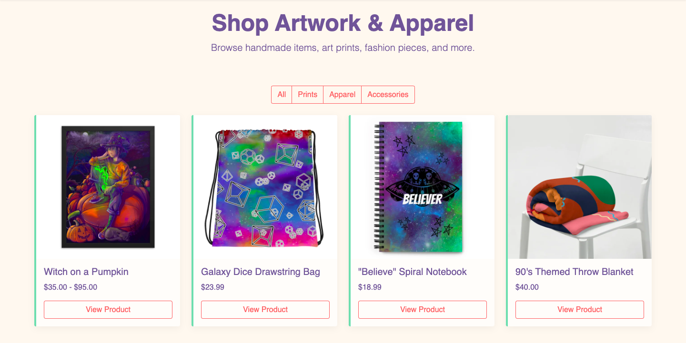
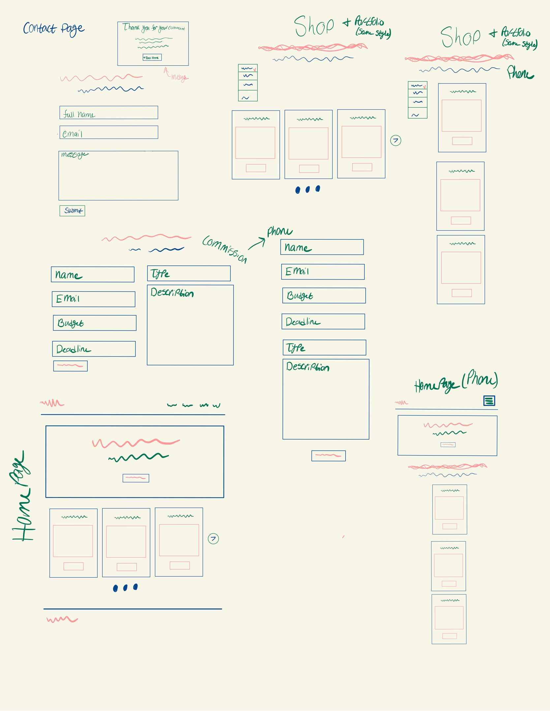

Challenge: The artist needed a single online space that could showcase original art, sell clothing and accessories, offer commissions, and build personal connections with fans. Most available portfolio templates felt too generic or corporate, and none fully reflected the artist’s vibrant, playful brand.
Solution: I designed and developed a fully responsive, colorful portfolio and shop website using Bootstrap 5 and SASS. The goal was to keep the layout clean for usability while infusing the artist’s signature personality into every page through color, typography, and custom styling.
This project was designed for a dual audience:
I began by working closely with the artist to understand their style, audience, and vision for the site. We identified key goals: a sticky navigation bar for easy access to all sections, bold color usage, and clear calls-to-action for buying or commissioning art. From there, I mapped the site structure to ensure logical navigation between the homepage, portfolio, shop, commissions, about, and contact pages.
Initial sketches focused on the arrangement of artwork, product displays, and the commission request form. I then translated these sketches into wireframes using Figma to refine page layouts and create a smooth, intuitive user flow.

For the visual design, I built a cohesive palette using coral (#ff6b6b), lavender (#6b5b95), mint (#88d8b0), and cream (#fff8f0). I paired these colors with bold headings and clear sans-serif body text for readability. The designs showcased large images for the portfolio, grid layouts for the shop, and an inviting commission section.
I tested the prototype with three peers and received valuable feedback:
This was one of the most rewarding projects I’ve worked on because it successfully captured both the functional needs and the personality of the artist. I’m proud of how the final site feels inviting, colorful, and personal, without sacrificing usability. I learned a lot about customizing Bootstrap with SASS, applying a consistent color system across multiple pages, and creating designs that communicate directly to a specific audience. If I had more time, I’d add a CMS for easy product and artwork updates, as well as implement more interactive elements like hover animations and dynamic filtering for the portfolio gallery.